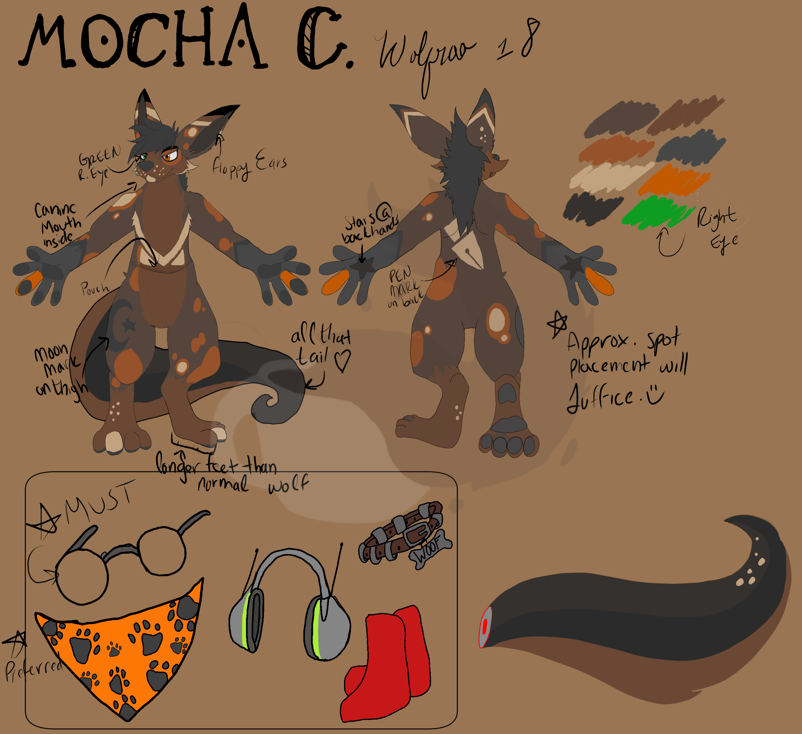

Who is Mocha Cinnamon?
Mocha is a hybrid of a Kangaroo and a wolf, making what is known as a wolfroo. Despite being of the male gender, Mocha has a pouch on his torso, and although it is deep it is not bottomless.
What Qualities of each side does Mocha inherit?
Excellent question! Well, his traits are a bit complicated. First of all, lets begin with the Kangaroo side.
Kangaroo:
- Mocha has a pouch to hold his belongings in; Like a natural, attached pocket
- Mocha has big, roo-like feet, which makes perfect for seamless hopping around and higher jumping ability. The highest Mocha has jumped is about 5 meters (~16 feet 5 inches) high.
- Mochas hands resemble more of a kangaroo than a wolf, he has fingers which gives him dexderity.
- Mocha's tail is quite long, with the tip of the tail dragging on the ground.
Are commissions open?
Updated: 5/8/2017 Not Quite! I am currently in the process of getting commissions set up with my prices figured out and what I will be offering. Method of payment will be PayPal. Follow me on twitter to make sure you know when my commissions will open. It may be withing the next couple of weeks! I definitely did not except to be able to open commissions this soon. Thank you all for your patience!
Does Mocha have a reference?
Yes! It is right here:
